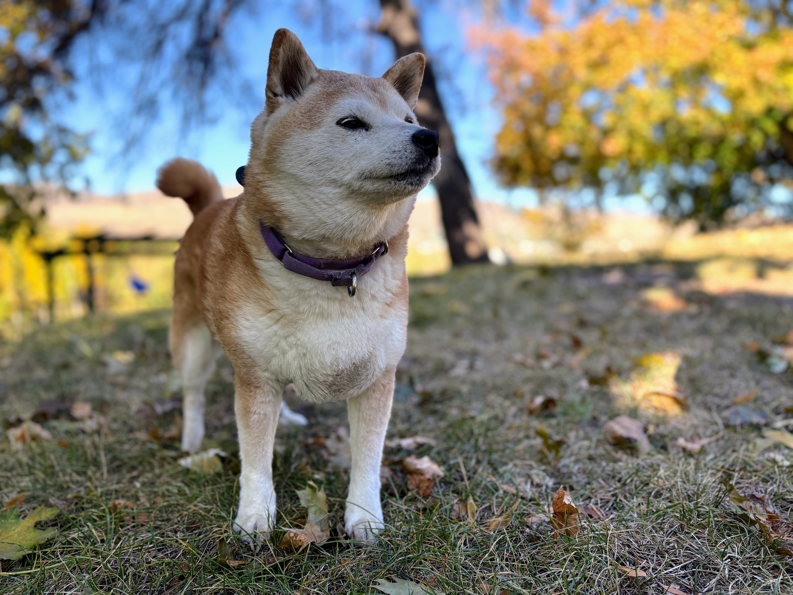
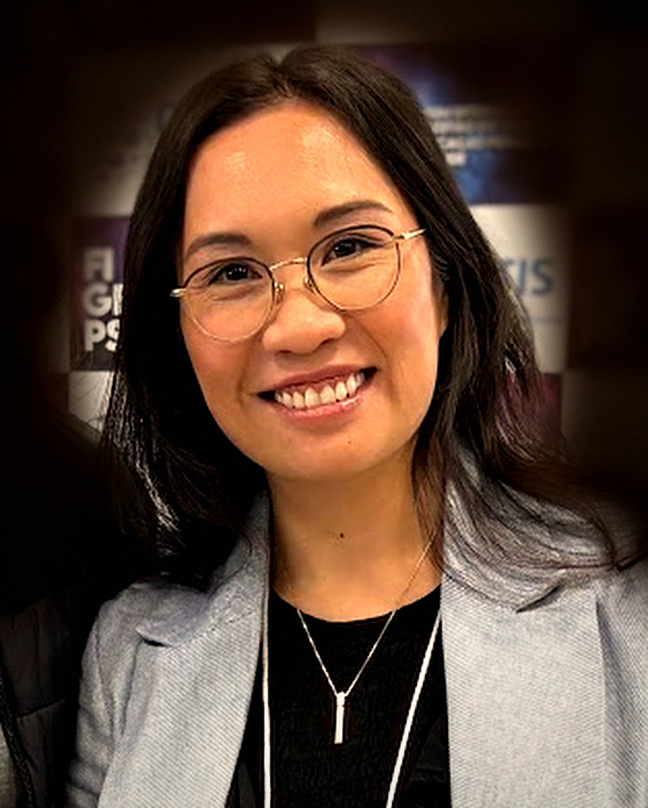

{{ pane2Title }}{{ pane2Count }}
{{ k.n }}
{{ k.label }}
Recent years
Nothing here under those filters.
The stream only carries recent items. Older work lives in the full archive, and the publication list is generated from the ORCID record every Monday.
{{ feedNote2 }}
From the lab
Non-dominant groups belong in the conceptualization, design and implementation of health technology — not only in its evaluation.
{{ p.status }}
{{ p.funding }}
{{ p.title }}
{{ p.description }}
With {{ p.co }}
Earlier work
{{ p.title }}
{{ p.funding }}
Co-investigators
Across the four active studies. A filled mark means more than one shared study.
{{ c.name }}
This list is generated from the ORCID record every Monday morning. Nothing on it is typed by hand.
{{ pubsTotal }}
Indexed works
{{ pubsNote }}
Above all we value doing good work with good people — compassion, justice, equity, humility, transparency, interdisciplinarity.
{{ m.name }}
{{ m.role }}
HIE PIE Advisory
Patient and provider partners
Patient/Provider/Process Involvement Engagement — the lab's standing group of patient partners, providers and process advisors. Long-term members who shape research questions, priorities, study design and knowledge translation across all of our work, keeping it grounded in lived experience and real-world practice.
{{ p.role }}
{{ p.name }}
{{ p.focus }}

The actual PI
Maya T. Butts, Shiba Inu
Likes playing ball on the beach, cheese, attention from strangers, extreme temperatures, taking herself for a walk. Dislikes fireworks, fruit, baths, affection.
Eighteen alumni have passed through the lab since 2021.
I speak on AI, equity and nursing practice — keynotes, rounds, panels, workshops and board education. What I charge depends on who is asking and what the work is.
Topics
{{ t }}
Sliding scale
Four bands rather than a price list. Community and patient-led work is unpaid by design and subsidised by the commercial band; if a fee is the only barrier, say so in your first email and I will find a way.
{{ t.tier }}
{{ t.who }}
{{ t.detail }}
{{ t.fee }}
Tell me about the event
Three answers and the email writes itself.
{{ estimate }}
What moves the number
A talk built from scratch or requiring new analysis carries a supplement · extra sessions, panels or media on the same day are charged as additional work · recording kept and redistributed by the host: licensed separately · multi-day facilitation quoted as a day rate.
Travel and logistics
Fees exclude travel. In person: economy airfare, accommodation, ground transport and a per diem, booked by the host or reimbursed · cross-country and international bookings need a day either side · virtual is often the better use of everyone's budget.
Booking
Six to eight weeks' notice preferred · commercial bookings confirm on a deposit, with the balance due after the event · cancellation inside two weeks is invoiced at half · industry fees go to trainee stipends and travel, not to me.
Straight to the lab inbox
Open now
Accepting Masters thesis-stream students for the 2027 intakes.
Across every level of collaboration and supervision I encourage applicants from groups underrepresented in nursing research and academia. Note: I do not take on supervision inquiries made within one month of an application deadline.
Send me
A short note on the project you want to work on and how your background fits · your informatics background and any publications · unofficial transcripts · CV and a writing sample.
Attach it all to the query form
PhD applicants
A foundational grounding in nursing or health informatics · a completed Masters in nursing, informatics or a related field · at least one peer-reviewed paper in a health informatics journal.
UBC IGS Global Studies / UBCO Nursing Grad
Everyone else
Postdocs, local or remote. Health authorities, NGOs, community organisations and industry working on health equity and health technology. UBCO nursing students wanting a Y4 preceptorship.

ART360, Arts Building
1147 Research Road
Kelowna, BC V1V 1V7
Filipina scholar · Registered nurse · Health informatician
The lab's work is interdisciplinary and underpinned by critical theories and implementation science, aimed at meaningful inclusion of non-dominant groups in how health technologies are conceived, designed, built and implemented.
Charlene works in mixed methods, participatory and co-production approaches and HCI: nursing informatics competencies, usability research, person-centred design, rapid prototyping, and technology adoption.
What we work on
Also
Funded by AMS Healthcare, Brocher Foundation, Canadian Nurses Foundation, Roche Canada, SSHRC, and UBC internal grants.